撮影しても、写真からでも
2つの絵が並んだ間違い探しを、その場で撮影するか、写真アプリから選びます。左右に並んだ絵も、上下に並んだ絵も読み込めます。
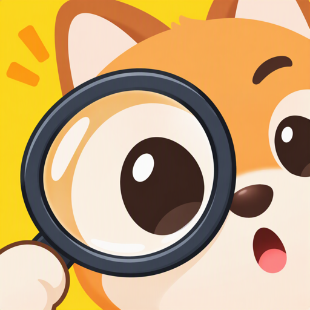
あと1つが、
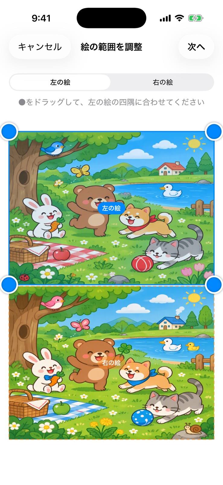
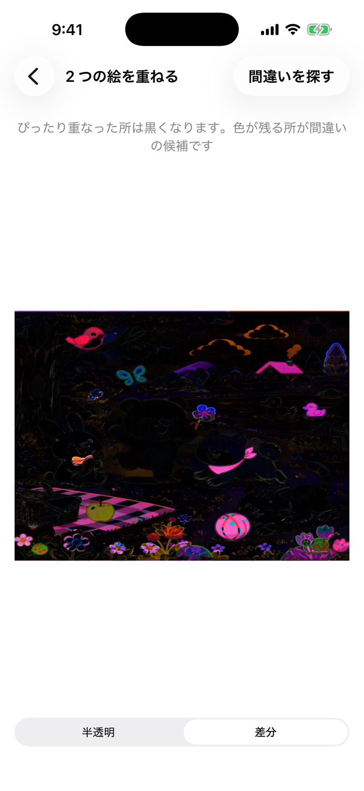
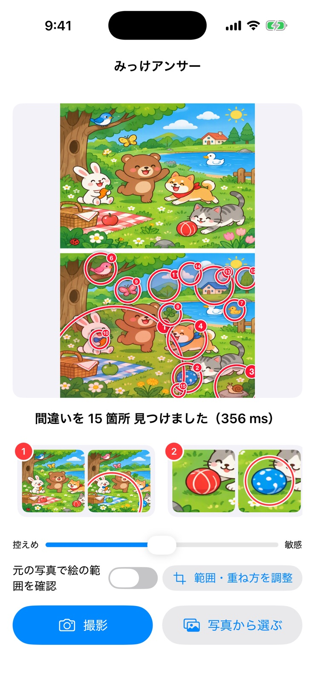
FEATURES
雑誌やドリル、お店の紙のマットの間違い探しも、写真に撮れば答え合わせができます。
2つの絵が並んだ間違い探しを、その場で撮影するか、写真アプリから選びます。左右に並んだ絵も、上下に並んだ絵も読み込めます。
2つの絵それぞれの四隅に●を合わせるだけ。斜めから撮った写真も、まっすぐに補正して同じ大きさにそろえます。隣り合った絵は「左の絵」「右の絵」を切り替えて、1枚ずつ調整できます。
切り分けた2枚を、ドラッグ・ピンチ・回転で重ね合わせます。最初からだいたい合った位置で始まり、最後の細かいずれはアプリが自動で合わせます。
見つけた間違いに⭕️と番号を付けて表示します。一覧から選ぶと、その場所を2つの絵で拡大して見比べられます。見つけ方は「控えめ」〜「敏感」のスライダーで調整できます。
HOW TO USE
間違い探しを読み込んでから答えがわかるまで、4つのステップです。
間違い探しを撮影して、2つの絵の四隅に●を合わせます。
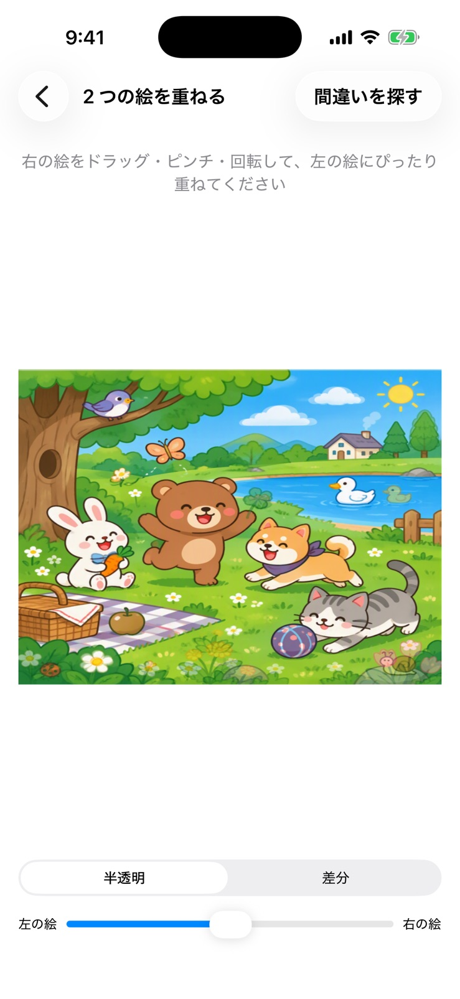
右の絵を動かして、左の絵にぴったり重ねます。
「間違いを探す」を押すと、違う所に⭕️と番号が付きます。
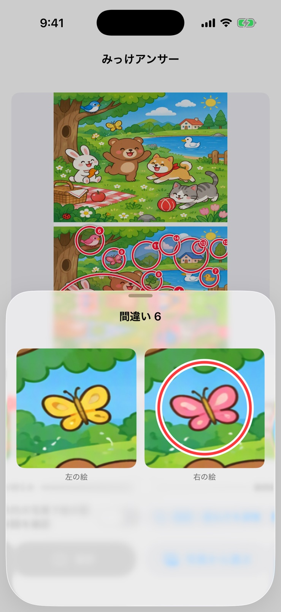
一覧から選ぶと、その場所を拡大して見比べられます。
OVERLAY
重ねる画面は、表示を「半透明」と「差分」で切り替えられます。「差分」にすると、2つの絵がぴったり重なった所は黒く打ち消し合い、違う所だけが色付きで浮かび上がります。⭕️を見る前に、自分の目で答え合わせをするのもおすすめです。
SCREENSHOTS
横にスクロールして、すべての画面を見られます。
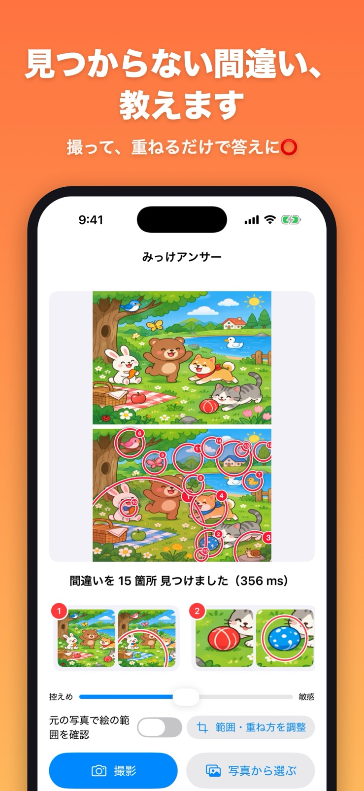
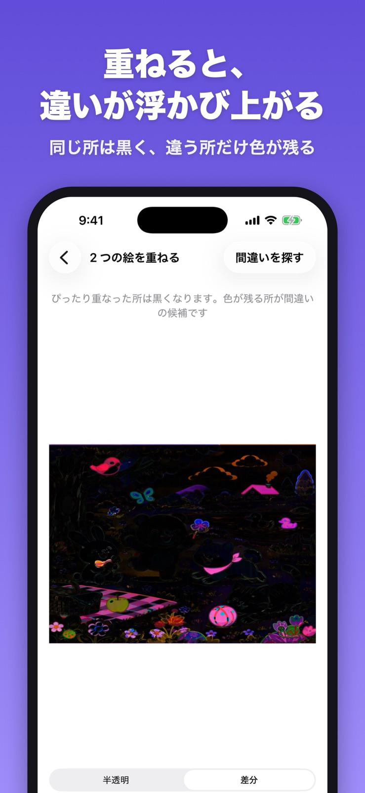
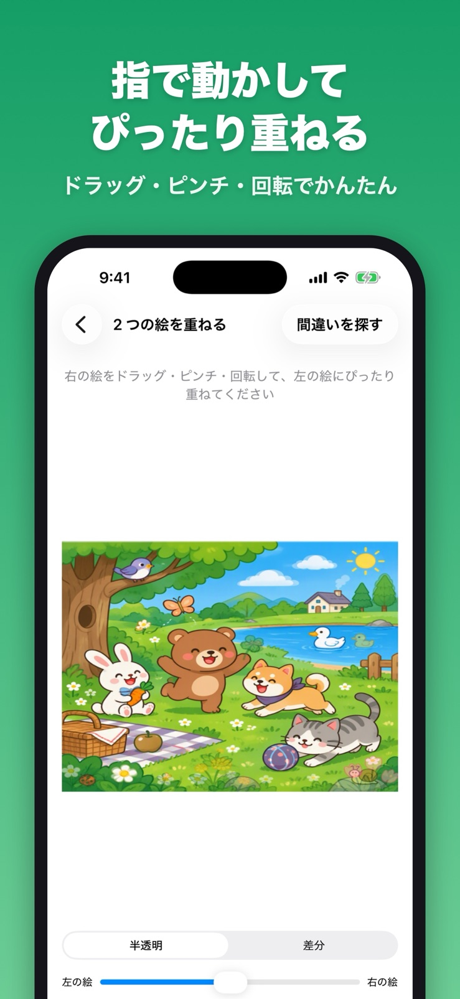
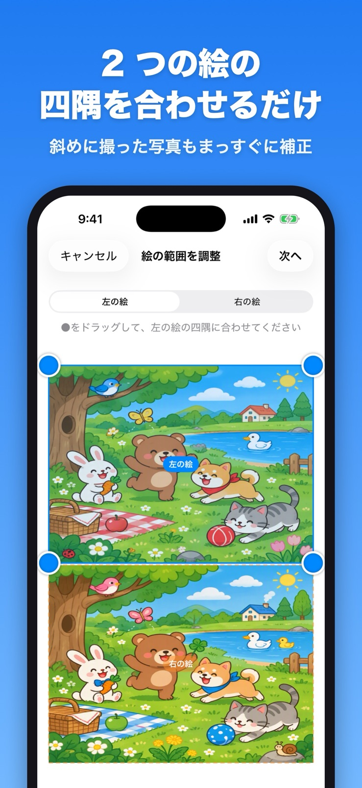
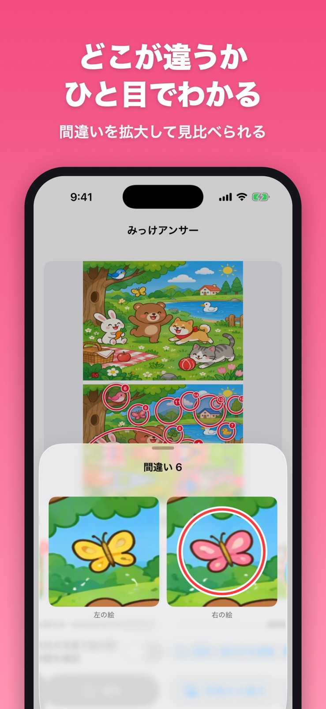
撮って、重ねるだけで答えがわかる間違い探しアプリ。
ご意見・ご要望、不具合のご報告を受け付けています。
TwitterのDMで問い合わせる撮影した写真や選んだ画像は、間違いを見つけるために端末の中だけで処理します。写真を外部に送信したり、アプリ内に保存したりすることはありません。詳しくはプライバシーポリシーをご覧ください。
プライバシーポリシーを読む